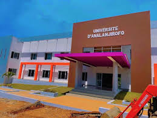

L'institu Superieur du Tourisme de l'Universite d'Analanjirofo, initie l'annee 2025, Est localisé à 3km au sud de la ville du Fénérive-Est sur la route nationale (RN5), vers Toamasina.
notre objectif
Former des jounes dynamiques, bien formés et prêts à travailler dans le domaine du tourisme et de l'hotellerie, à Madagascar ou à l'international.

Qui sommes-nous?
l'Institu Superieur du Tourisme d'analanjirofo ista est un jeune établissement public d'enseignement supérieur, crée pour répondre au besoin de formation de cadres compétents dans le secteur du tourisme, en particulier dans la région d'Analanjirofo riche en paysage naturels, culture, biodiversité et attraits touristiques uniques.

pourquoi choisir l'ISTA?
Formation pratique et adaptée à notre région. Encadrement par des professionnels passionnés. Stage dès la 1er année. Débouchés varies dans un secteur en pleine croissance. Diplôme reconnu avec poursuite d'études possible.